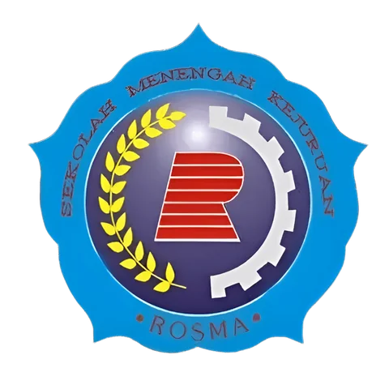

Praktik Kerja Lapangan (PKL)
- Membantu teknisi memasang jalur baru.
- Membantu pemasangan server.
- Membantu perbaikan jalur.

Web Developer
Membangun web yang rapi dan responsif dengan HTML, CSS, JavaScript, dan PHP.
Web developer fresh graduate yang antusias dan cepat belajar, dengan kemampuan pemrograman di Java, C#, dan PHP. Terbiasa membangun aplikasi web dan siap berkontribusi dalam tim pengembangan sambil terus mengembangkan keterampilan teknis.


1–3 Dasar 4–6 Menengah 7–8 Mahir 9–10 Ahli
Social Media